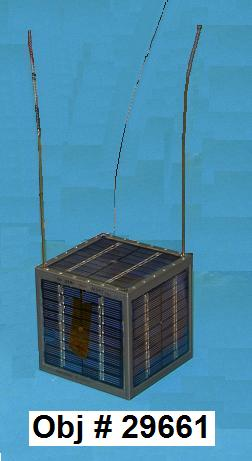
RAFT Re-Entry Campaign
US Naval Academy Satellite Lab
Bob Bruninga, WB4APR
FREQUENCY: 145.825 FM
Download Final RAFT mission summary Power Point.
BYE-BYE RAFT: Last packet captured was by PE1ITR at 01:45:10. . Nothing heard
on the next USA pass at about 0300z on 30 May 2007. Total mission time for RAFT since
the 21 December Launch was about 5 months and 9 days. . During the last 24 hours, the
RAFT temperature rose by 30 deg C in the dark. Presumably it was reaching 50C in the
day side. . To hear one of the last packet-to-voice messages, recorded by PA3GUO,
replay this. Also there is good
information on PE1ITR's
RAFT web page.
THANK YOU ALL SO MUCH FOR YOUR PATIENCE AND EFFORTS! . More to come after
we catch up on backlogged work...
RADAR FENCE DETECTION: . Below is a DIGIPAN display of Matt's detection of the radar fence
from the UC Irvine Ground Station on the 27th. . The Doppler starts high and then proceeds
downward at an ever
increasing rate as it was approaching the center of the pass. .
Then the 1 minute fail-safe transponder
timer ran out. . An interesting deviation from the classic "S" curve of Doppler is the
slight inflection in the audio rate at the start of the pass. . Maybe it was a natural
frequency drift from the transponder having been just turned on. .
Hear his file
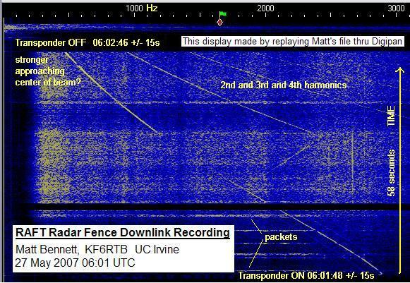
This long Doppler was a big surprise. . This means we were detecting the radar fence
on its sidelobes, instead of only when passing into the center of the 0.2 degree wide
fan beam. . We would only be in the middle of the fan beam for about one second. .
the fact that we can hear the fence the entire time it is above the satellites horizon
is very good news!. This means, precise timing of the fence passing is not required,
since analysis of the Doppler curve can tell us our position too.
RAFT Telemetry Urgently Needed: Original predictinos of the mission lifetime of
RAFT were in August. So we were waiting for the next evening-pass-time phase of the
orbit to do our RADAR fence test. But in late May we became aware of a umch sooner
de-orbit date and began to operate past bed-time to obtain these results. Deorbit
was in 10 days after we began the de-orbit campaign. . We solicited some
good OSCAR class station volunteers, as shown on the schedule below.
DAYTIME TESTS CONFIRMED: RAFT has been reported as pretty deaf during the day,
so we only man-up two good high elevation passes per night between midnight and 2 AM. .
We conclluded that RAFT is deaf in the Sun due to an overcharge battery voltage
which causes the discriminator to distort. . We theorized that a station with
LOW deviation might still be able to get in. . This was confirmed by Ron, AH6RH! .
RESULTS SO FAR: Sunday: Our first success was by Matt at the UC Irvine,
satellite station. On this day, Ron also confirmed Daytime Access with low deviation
and 1 KHz tracking. . Most other pass times were unsuccessful. On Monday, Matt also
got the transponder turned on, but apparently RAFT was outside of visibility of the
radar fence from Texas. . Towards the end, RAFT was very fast,
and ahead of predictions because of the rapidly decreasing altitude.
See the RAFT Operations Web page..
See the latest live packets from RAFT
See the
RAFT Telemetry Summary plot. . (Temp is Black, Green is Solar, Red is Volts. All unscaled)
See individual values:
Volts,
Solar Current,
Battery Current,
Load Current,
Temperature.
Latest Element Set
the sked below is based on an epoc time of 07143.79719143. Use a later one if one comes up.
WARMING: . As you can see below, RAFT warmed in the last 24 hours due to
atmospheric heating as it approached its demise. . Stations around the world
were collecting this data for live injection into the APRS ground station network.
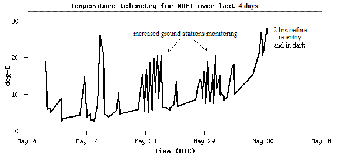
See last 10 days
Harro Zimmer predicted actual re-entry on 30 May at 03:47 UTC +/-06 minutes
descending over 41.99°S, 97.84°E (South Indian Ocean). .
Here are some previous
emails on the re-entry campaign.
RADAR FENCE: . This image below shows the radar fan-beam in yellow and
the three extreme examples of RAFT passes through the fence. The Western pass, a central pass
and an eastern pass. . Only night time ascending passes will work.
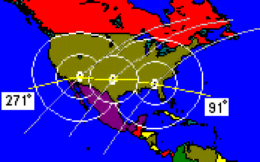
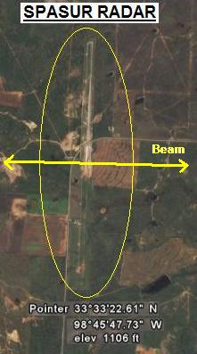
The InstantTrack map above shows the very narrow (yellow) fan beam being radiated at 80 Megawatts
from Kickapoo Texas. . This beam is generated by a 2 mile N/S array of dipoles that are clearly
visible from about 30,000 feet on Google Earth as shown to the left. . The N/S array
develops an extremely narrow 0.2 degree wide fan beam at all elevations
from the Eastern horizon to the Western horizon along the precise azimuths of 91.2
and 271.2 degrees (see how it is tilted slightly).
Our objective is to command RAFT's Radar Transponder ON about 30 seconds
prior to passing through the fence E/W beam. . To do this, we must have a command station in range
to send the ON command at exactly the right time (+/- 10 seconds or so). .
And with RAFT's receiver, it must be above about 10 degrees to the command station. .
The footprints with RAFT above 10 degrees is is represented by the smaller white
circles on the InstantTrack map above.
URGENT COMMAND STATIONS NEEDED! . We must find command stations in those small footprint
areas in the NEXT 8 DAYS before RAFT re-enters. . The requirements for a command station are
simple. . Here are the basic requirements:
Be located in the small circles above
2 Meter Beam with Preamp TX and RX on 145.825
Any AX.25 1200 baud Packet TNC
Familiarity with operating your TNC in "cmd:" mode with Hyperterm
Willingness to operate between 1 to 3 AM
PRECISE TIMING REQUIRED: . There is only ONE pass through the fence per night
per footprint. . I hope you have a tracking program to develop your own timing and to
see if and when your station is optimum. . Use only KEPS that are under a half-day old. .
I use InstantTrack and enter both my station
and Kickapoo as a second station. . Then it is easy to see when the satellite passes through
the AZ of 91.4 or 271.4 from Kickapoo.
See schedule below. .
There are two critical elements to this timing.
First is the exact instant that RAFT passes either 91.4 or 271.4 degrees from Kickapoo (33.558N 98.737W)
At least a minute before that, you must have RAFT above about 10 deg to command it.
You can logon anytime prior (but still commanding is hard below 10 deg)
After successful logon, you must send the command about 40 seconds prior to the fence
Over the final 8 days, your particular ground station may only have one or two good passes,
since some days the passes are favored to the east, and some days, to the west. . I hope you
can do the advance planning yourself for your station before you commit. . Thanks.
COMMANDS: . The next image shows the exact command sequence. . if you volunteer,
this is all you have to do. . That is, use Hyperterm or other dumb-terminal program and
connect to the remote sysop callsign of RAFT, and then match the password challenge.
(We will send you the password generator). . Once you get the spacecraft's "prompt:"
then you wait to the precise time and send the CTR B 1 command. . When it is acked
and you hear the carrier come up, turn off your TNC and start your audio recorder.
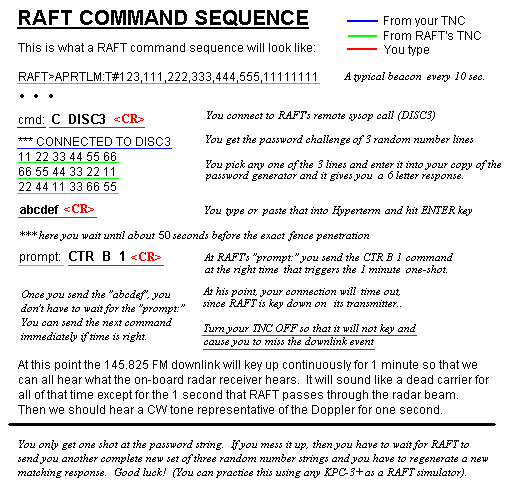
COMMANDING RISKS: . Since there is one-and-only-one shot per night, the criticality of
this evolution is significant. . Most important is to confirm your ability to hear RAFT
during any of the other passes per day. . Here are the risk elements:
If your station cannot hear RAFT reliably above 10 deg, dont bother
You can test your RECEPTION at any time on ANY pass. . This is 6 times a day.
But you only get ONE command chance.
The LOGON must be successful. . Only three retries are allowed before lockout.
If lockout occurs, then no one can get in the rest of that pass over the USA.
When you command-ON the radar transponder, that locks out commanding for 1 full minute
That is why it must be at the right time (40 seconds prior to anticipated fence).
RECORDING STATIONS: . We also need stations in the smaller 10 deg footprints above
to have a SOUND recorder going so that we can capture the pass. All we need to hear
is the sound from the FM CARRIER DOWNLINK during the ONE-MINUTE activation of the
radar transponder. It will just sound like a pure carrier (the RADAR receiver has
very little background noise since it only has to hear an 80 meggawatt signal.). .
If we are successful in being ON at the right time, then we will hear a brief,
one second tone as the RAFT flies through the radar beam. The frequency of the tone
will correspond to the Doppler at the instant the satellite passes through the beam.
As you can see from the original estimate for RAFT below, we are in the final days!
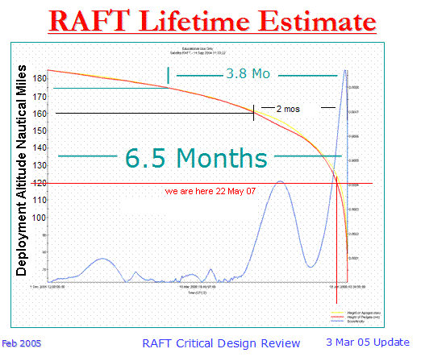
If you think you can help out and will sign up to be the command station for a pass,
then contact me WB4APR at AMSAT dot ORG. But please see if you can figure most of this
out on your own first. .
SIGN UP SCHEDULE: . Please sign up. Even if you see multiple stations signed up, we must
have the best station commanding, and backups. We also need people recording the downlink
even if they are not comanding. Don't be shy. When you vollunteer, score yourself on a
capability scale of ABCDE, where A is a full 2 meter OSCAR class station, 10 element beam,
auto tracking, fully knowledgable of TNC's and KPC-3+ remote-logon use. An E station will
be a laptop in the field with an ARROW antenna on the hood of a car.
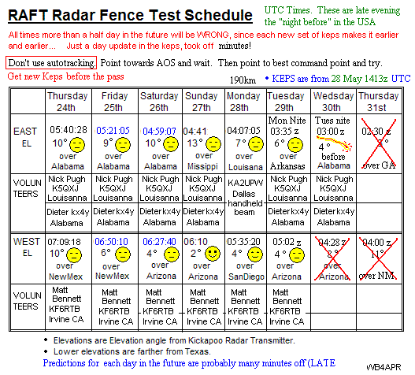
ANTENNA ALIGNMENT: . RAFT has a small popcorn seed sized magent that will attempt to keep
the spacecraft and its linear antennas pointed to North. This means that you will be in the antenna
null zone when it is due south of you. When it is north of you, the antenna will be vertical as
it points down to the North Pole. Best signals will be E and W of you as shown in the following
image:

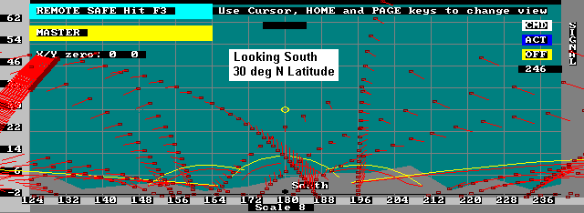
RAFT XP-217 RADAR TRANSPONDER: The RAFT radar fence transponder is the small circuit board
in the photo below that is mounted on top of the typical Hamtronics receiver we use in our spacecraft.
When we command on that little 216.98 MHz receiver, it also keys the Hamtronics donwlink 145.825
transmitter so we can hear on the ground what the XP-217 transponder receiver is hearing. That is
how we expect to hear ourselves go through the fence.
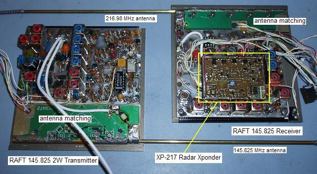
We call the XP-217 receiver a transponder because at the same time it is a 216.98 MHz
oscillator as well. Since it is a direct-conversion linear (DSB) receiver, then it was designed
with a 4 milliwatt leaky local oscillator so that this 216.98 MHz osillator could also be heard
by the SPASUR fence as well. This circuit was designed by a dedicated team of AMSAT members
in the Boston area, Tony Monterio, AA2TX, Dave Goncalves, W1EUJ, and Joe Fitzgerald, KM1P shown
below.
See Their WEB page.
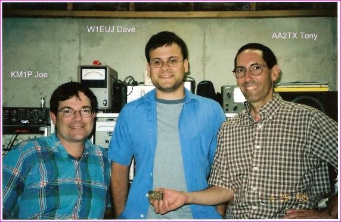
EVERYTHING ELSE YOU NEED TO KNOW ABOUT RAFT OPERATIONS IS FOUND ON THE FOLLOWING
THREE WEB PAGES:
ANDE-RAFT-OPS.
(How to operate the packet-to-voice synthesizer)
Overall RAFT page
RAFT-DOCS page with all the design details.
Since 22 May 07, you are visitor:
 <== not visible on IE, but NetScape sees it
.
<== not visible on IE, but NetScape sees it
.
{kind=link}
{kind=link}